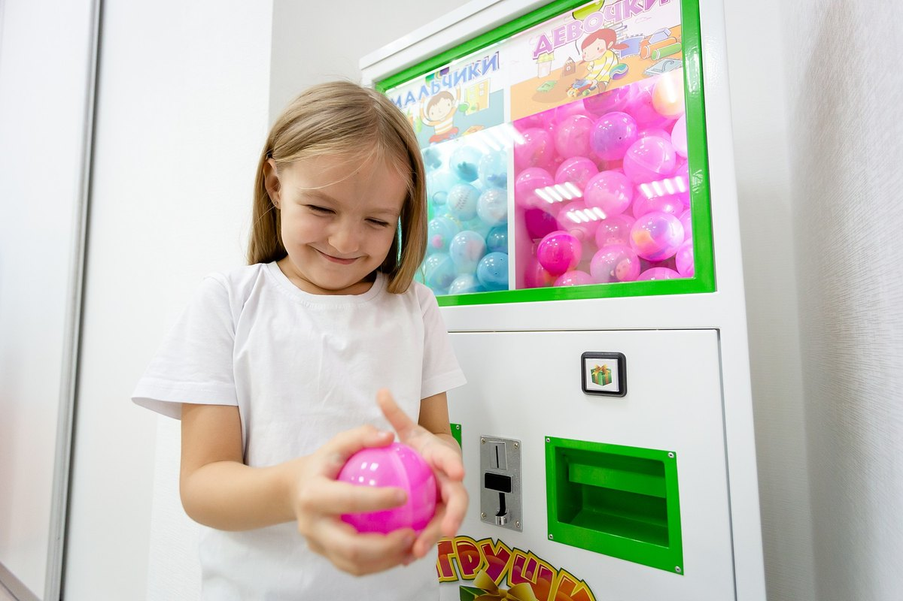
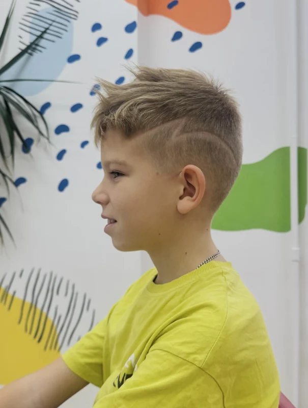
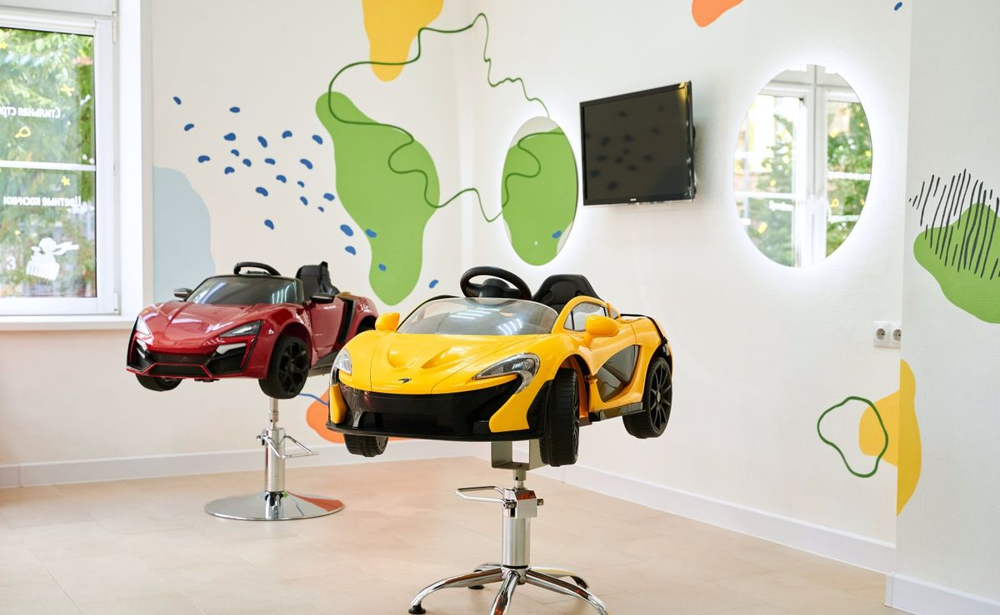
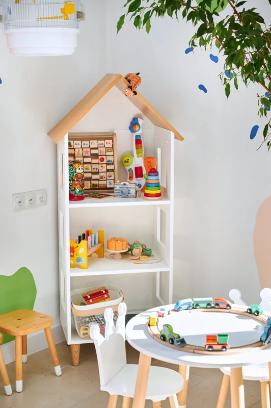
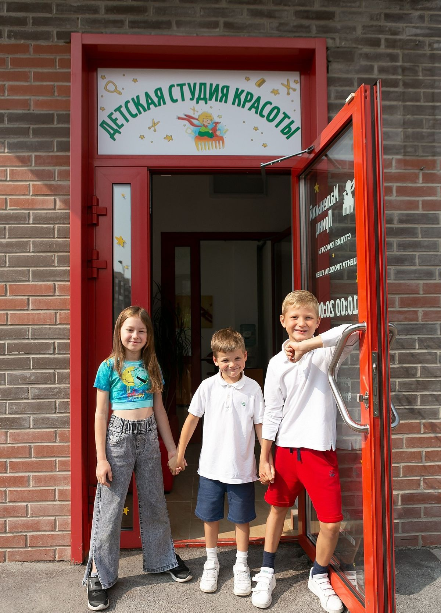
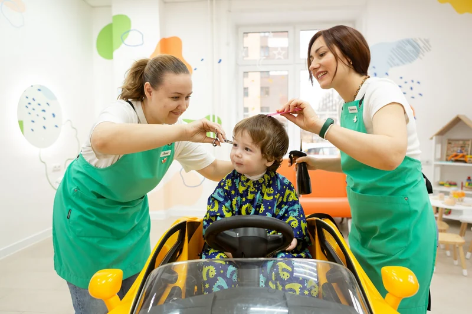
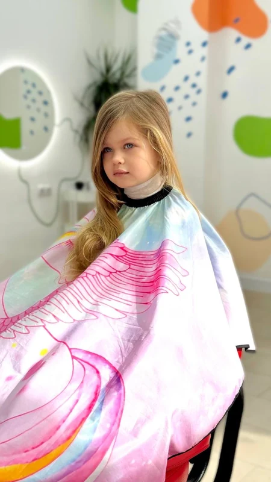
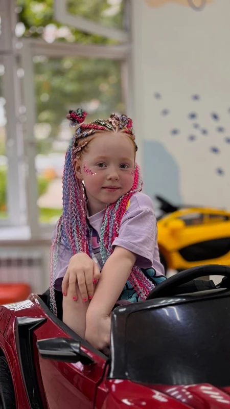
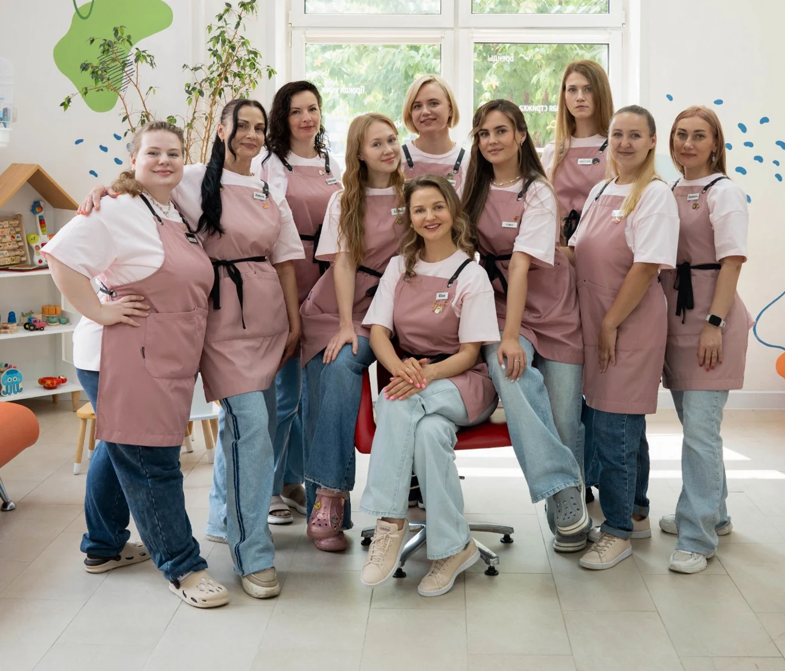

★★★★★
Вожу подстригаться сына, ездим с другого берега раз в полтора месяца — стабильно. Даже не жалко времени на дорогу: это лучшая парикмахерская, что мы встречали. У мастера Натальи — золотые руки.
0+ Любовь с первой стрижки!


У каждого направления свой цвет — как на стенах студии. Выберите, с чего начнём.
Первая, модельная, удлинённая или спортивная стрижка — выбирай свою! Художественный выстриг — от молнии до лабиринта.
ПодробнееСамая безопасная система в мире по проколу ушей — System-75 от Studex (США). Безболезненный прокол! Детям и взрослым.
ПодробнееПока ребёнок играет — стрижка для мамы и папы. А можно и всей семьёй сразу.
ПодробнееПраздничные локоны, модные косы, цветное окрашивание и нарядная причёска — к утреннику, выпускному и дню рождения.
Подробнее
И другие дизайны. Выбор первых серёжек — самый большой в России!
Для прокола ушей у нас отдельная розовая зона с цветами и неоном — для красивых фотографий! Наши клиенты отмечают, что прокол ушей запоминается как маленький праздник!
Не процесс стрижки, а веселое приключение. Вот как она проходит у нас: без спешки, с улыбкой.
Мастер говорит с малышом, показывает расчёску и машинку — пусть сначала потрогает.
Выбираем машинку — спорткар, кабриолет, а может быть, мотоцикл? Пусть ребёнок выберет сам.
Любимый — на экране перед креслом. А в углу чирикают два попугайчика.
Быстро и аккуратно, пока малыш занят. Можно у мамы на ручках.
Фото стрижки, первый локон в конвертике и диплом на память.*
Капсула с игрушкой из автомата за смелость либо самая вкусная конфета, чтобы у ребёнка остались только сладкие воспоминания.*
* Диплом и фото можно получить только в филиале на Южном берегу (ул. Капитанская, 14). Выдача капсулы с игрушкой производится в филиале на Южном берегу (Капитанская, 14). Выдача сладкого подарка — в филиалах на ул. Белинского, 8 и пер. Сибирский, 5а.

Нажмите — и узнайте, что ещё уносят домой наши гости.
Сюрпризы у нас только в автомате подарков. Мы всегда готовы сориентировать вас по ценам.

Скидка 10% на стрижку второго ребёнка
Онлайн-запись доступна на Южном берегу, не позднее чем за 12 часов до визита. Во всех филиалах можно записаться по телефону.
В наших студиях светло, просторно и интересно.










Наши мастера знакомятся с малышами, дают им время привыкнуть и помогают почувствовать себя спокойно. Нажмите на карточку, чтобы познакомиться поближе.
ул. Капитанская, 14
ул. Белинского, 8, 3 этаж
Это не наши слова — это отзывы из 2ГИС. Немного из последних:
Ваши впечатления помогают другим родителям выбрать нас 💛
ул. Капитанская, 14
ул. Белинского, 8, 3 этаж · «Весёлая расчёска» на картах
пер. Сибирский, 5а, 1 этаж · «Стрижи» на картах
Остались вопросы? Напишите нам или выберите филиал.
Мы — детская парикмахерская, поэтому стрижём малышей любого возраста. Самому юному нашему клиенту было всего два месяца.
Если малыш ещё не умеет сидеть, мы подстрижём его на ручках у мамы.
Такое бывает — мы к этому готовы. Кресла-машинки, мультики, игрушки, попугайчики, мыльные пузыри — всё, чтобы отвлечь малыша.
Но важна и подготовка. Советуем заранее поиграть дома в парикмахерскую: причёсываться и подстригать кукол, объяснить, что здесь только игра и веселье. Не стоит говорить такие слова, как «не страшно», «не бойся»: накануне и по пути на стрижку — только позитивные слова и эмоции.
Следите за состоянием малыша: он должен быть выспавшимся и сытым, не после долгой дороги или врача — это влияет на настроение.
Советуем выбрать будний день: старшие ребята в это время в школе и садике, поэтому у нас спокойно, без суеты и лишнего шума. А малыши, как показывает практика, любят тишину.
Лучше приходить, когда у малыша хорошее настроение — например, утром. Важно, чтобы он был сыт и хорошо себя чувствовал.
Возьмите с собой запасную футболочку: если малыш не захочет надевать пеньюар, мы просто переоденем его в чистое после стрижки.
В стоимость входят:
И ещё: мы всегда на связи с вами. Если дома возникнут вопросы или переживания — пишите или звоните, мы поможем и подскажем. 🤍
А дальше — приятная часть: фотосессия счастливой принцессы, блёстки, примерка короны, памятное фото, вручение грамоты и подарка.
Онлайн-запись через YCLIENTS доступна только на Южном берегу. Во всех трёх филиалах можно записаться по телефону.
Выберите удобную студию в Красноярске. Онлайн-запись доступна только на Южном берегу.